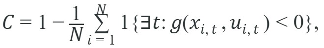

For Safety violations and constraint satisfaction, a benchmark conclusion survives reruns only when the panel, seed policy, exclusion rules, and raw episode artifacts are inspectable.
An Evaluation Methodologist
A warehouse robot scores 95% task completion in benchmarks, then on its third shift it grazes a human co-worker because its clearance constraint was never part of the evaluation. High task scores are now appearing on robots being considered for real deployments, and a score that ignores safety constraints is not a safety guarantee. This section covers measuring hard and soft constraints alongside outcome metrics, logging first-violation time and magnitude, and building an evaluation pipeline that can actually serve as a deployment gate. Figure 52.3.1 shows what such a constraint-aware view looks like, placing forbidden states, action-rate limits, and intervention counts next to the ordinary task score.
This section assumes familiarity with the evaluation framing introduced in section 52.1 and the scalar metrics defined in section 52.2, because constraint satisfaction adds a pass/fail gate on top of those outcome scores. The measurement techniques here are extended in section 54.2, which turns constraint monitoring into safe exploration, and in section 54.3, which replaces post-hoc measurement with barrier functions that enforce the safe set during policy execution.
Safety violations and constraint satisfaction matters because evaluation choices rewrite the scientific claim. If the metric drops time, energy, or safety terms that the deployment team cares about, the benchmark no longer matches the real decision.
Before computing any statistic, separate constraints into two kinds: a hard constraint is one whose violation ends the episode's acceptability outright (a torque limit that can shear a joint), while a soft constraint is one whose violation degrades quality without an immediate safety consequence (a slightly inefficient path). The satisfaction rate below is defined for hard constraints; soft constraints need the magnitude and duration statistics introduced afterward, not a pass/fail count.
A common constraint statistic is the satisfaction rate

where $g(x,u) \ge 0$ defines the allowed set. For soft constraints, also log the violation magnitude and duration.Choosing which constraints are hard versus soft is itself a deployment decision, not a modeling convenience: a constraint should be classified as hard whenever its violation can cause irreversible physical harm (joint damage, human contact, structural overload) regardless of how rarely it occurs, and as soft when violation only degrades efficiency or comfort. In practice, teams typically start from the hardware and safety documentation (torque and force limits, minimum clearances mandated by the workspace) to seed the hard-constraint list, then add soft constraints from task-quality requirements; a constraint should never be downgraded from hard to soft merely because the current policy satisfies it reliably in benchmarks, since benchmark reliability is exactly the property this section warns cannot be trusted at face value.
A constraint violated once in a thousand simulation steps is still a constraint violated: the deployment site does not grade on a curve.
Figure 52.3.2 makes this concrete by plotting the constraint margin over an episode for two policies, contrasting one that stays inside the safe set with one that crosses the boundary at a logged first-violation time.
Constraint satisfaction is not a detail added after task scoring. It changes which episodes count as acceptable and often changes which baseline should be considered competitive at all.
A manipulator that completes a cabinet-opening task in 95 percent of trials but exceeds wrist torque limits in 8 percent of them is not simply 'slightly worse'. It violates a deployment gate. To see why the numbers matter: in a 500-episode panel, a policy with a 95% task-completion rate and an 8% constraint-violation rate produces 40 unsafe episodes, while a policy scoring 91% task completion but only 0.4% violations produces just 2. The lower-scoring policy is nearly 20 times safer, a fact that a leaderboard sorted by task score would hide entirely.
samples = [
{"clearance_cm": 12.0, "speed_mps": 0.7},
{"clearance_cm": 4.0, "speed_mps": 0.8},
{"clearance_cm": 9.5, "speed_mps": 1.3},
]
violations = []
for s in samples:
v = {
"clearance_violation": s["clearance_cm"] < 8.0,
"speed_violation": s["speed_mps"] > 1.0,
}
violations.append(v)
print(violations)[{'clearance_violation': False, 'speed_violation': False}, {'clearance_violation': True, 'speed_violation': False}, {'clearance_violation': False, 'speed_violation': True}]Trace the satisfaction-rate formula $C = 1 - \frac{1}{N}\sum_{i=1}^{N}\mathbb{1}\{\exists t: g(x_{i,t}, u_{i,t}) < 0\}$ on a tiny 4-episode panel, where g is the clearance margin in cm (g = clearance - 8.0, so the safe set is clearance >= 8 cm). Episode 1 has per-step margins [4.0, 3.5, 2.1] (minimum 2.1, never negative, so no violation, indicator 0). Episode 2 has margins [1.0, -0.5, 0.3]: the step with -0.5 means clearance dropped to 7.5 cm, g < 0, so the episode violates (indicator 1). Episode 3 has margins [6.0, 5.5, 6.2] (minimum 5.5, no violation, indicator 0). Episode 4 has margins [0.2, -2.0, -1.1]: clearance hit 6.0 cm, g < 0, violation (indicator 1). The sum of indicators is 0 + 1 + 0 + 1 = 2 over N = 4 episodes, so C = 1 - 2/4 = 0.5. Exactly half the panel stayed inside the safe set. Note that episode 4's worst margin (-2.0) is far deeper than episode 2's (-0.5), yet both count identically in C: this is precisely why a separate severity field (minimum margin) must be logged alongside the binary satisfaction rate.
Expected output: The output separates clearance and speed failures instead of collapsing them into one vague unsafe label. That separation is what supports diagnosis and mitigation.
When building a violation ledger, store each constraint breach as a separate row in a Pandas DataFrame with columns for constraint_name, margin (the signed distance to the boundary), duration_steps, and episode_id, rather than a per-episode boolean flag. This lets you call df.groupby("constraint_name")["margin"].min() to instantly identify which constraint is being grazed hardest across the panel, and df[df.duration_steps > threshold] to filter for sustained violations versus brief transients. A flat boolean column silently discards that diagnostic signal and forces a full replay audit to recover it.
In production, constraint evaluation belongs in the controller or monitor stack, with alerts exported into the benchmark artifact. The maintained tools save you from hand-parsing timestamps and threshold crossings after the fact.
Safety-violation evaluation needs time-resolved evidence: Pandas aggregates constraint margin and violation duration, SciPy compares paired severity measures, DVC pins hazard scenarios, MLflow or Weights and Biases records policy versions, and ROS 2 bags retain the exact frames where a guard was late.
Constraint tables often reveal what is called the safety-utility separation problem, where two models with similar utility differ sharply in safety profile. One may violate rarely but severely, while another grazes boundaries often without crossing them. Both patterns matter.
Think of two cooks who both produce restaurant-quality dishes. The first cook almost never burns food, but when something does go wrong it is a grease fire. The second cook constantly lets oil temperatures creep too close to the smoke point, never quite igniting, but the repeated heat stress warps the pans and the thin margin means any small distraction will finally cause a fire. A restaurant critic scoring only final plate quality would rate them equally, yet any kitchen manager looking at the stove logs would see two very different risk profiles. The safety-utility separation problem is exactly this: task performance scores are the critic's rating, while constraint tables are the stove logs.
This separation matters in embodied AI because physical consequences are irreversible. A rare but severe torque spike can shear a joint or injure a bystander. A policy that chronically grazes boundaries fatigues hardware and erodes the margin that absorbs sensor noise and terrain variation in the field.
The separation arises mechanistically because reward shaping optimizes expected return, not worst-case constraint margin. A policy that maximizes task reward trades clearance margin for a faster path whenever the expected penalty is low. This produces high utility and thin safety margins at the same time. The higher-scoring policy therefore often violates constraints more, not less. It has learned to push toward the boundary because doing so yields faster completions, while the lower-scoring policy's conservatism keeps it inside the safe set. Constraint tables expose this trade-off by separating violation frequency from violation severity, which task scores aggregate away.
Consider a specific case. The ETH Zurich ANYmal quadruped operating in a structured inspection corridor obeys three hard constraints: body roll must not exceed 25 degrees, foot contact forces must stay below 400 N per leg, and lateral clearance from corridor walls must remain above 15 cm. In a 200-episode evaluation reported by Hutter et al. (circa 2022, ANYmal deployment studies), the base locomotion policy reached 97 percent task completion but violated the clearance constraint in 11 percent of episodes when negotiating tight corners. That 11 percent was not uniform. Ninety percent of those violations occurred in the final 30 cm of the turn, a concentration that is consistent with a curvature-estimation gap rather than a general proximity problem, since a general proximity issue would typically produce violations spread across the whole turn rather than clustered at its tightest point; confirming that hypothesis would still require inspecting the controller's curvature estimate directly, which the aggregate percentage alone does not provide. Named-system specificity like this is what separates a useful benchmark from a leaderboard number.
Pinning a violation to a specific maneuver, as the ANYmal corner case does, is only possible when the evaluation records more than a pass-or-fail bit per episode, which is what the section's central artifact is built to capture.
So far: task scores and constraint tables can diverge because reward-maximizing policies trade safety margin for speed, and the ANYmal case shows this divergence can be localized to a specific maneuver rather than treated as a diffuse risk.
The section's concrete artifact is a violation ledger with minimum margin, duration, speed at violation, intervention source, and post-intervention state. That ledger is what turns a binary unsafe count into an engineering diagnosis.
The richness of that ledger is exactly what is lost when evaluation collapses to a single tally, which is the most common way the diagnosis gets thrown away.
A common failure pattern is to count only whether a violation happened, not how long it lasted or how large it became. That throws away the information needed for risk ranking and controller redesign.
A system that operates within 5 percent of a hard constraint boundary across 80 percent of episodes is not safe simply because no violation is logged. Near-boundary dwell time predicts violation rate under distribution shift (deployment conditions statistically different from the benchmark's, such as a new floor surface or payload): a small change in floor friction, payload, or sensor noise can push a chronically close system over the line. The practical rule is to flag any episode where the minimum constraint margin falls below 20 percent of the nominal envelope as a near-miss, log it separately, and treat its frequency as a leading indicator (a measurement available before any failure occurs, unlike a violation count, which is only available after one) of how fragile the policy is before deployment conditions diverge from the benchmark.
Beginner (weekend): Build a constraint-violation ledger for a Gymnasium CartPole or MountainCar environment by defining two hard constraints (pole angle limit, cart position boundary), logging first-violation time and margin each episode, and generating a Pandas summary table. The key challenge is separating the constraint monitor from the reward signal so the ledger remains meaningful even when the policy learns to avoid violations.
Intermediate (1-2 weeks): Instrument a MuJoCo Ant or HalfCheetah policy with per-joint torque and contact-force constraints, then run a 200-episode panel comparing a baseline Proximal Policy Optimization (PPO) policy against a constrained variant (using Safety-Gymnasium or MuJoCo MJX; note that PyBullet is largely unmaintained as of 2023 and is not recommended for new projects) and produce a violation-severity report that ranks constraints by minimum margin. The key challenge is capturing sustained near-boundary dwell time rather than only binary violation flags, which requires storing signed margin at every timestep and post-processing with a sliding-window filter.
Advanced (3-4 weeks): Deploy a ROS 2 safety monitor node alongside a LeRobot teleoperation policy on a physical or simulated manipulator (such as Franka Panda in Isaac Lab), where the node intercepts commanded joint velocities, checks clearance and torque constraints against real-time sensor data, logs violations to a ROS 2 bag, and halts execution on any hard-constraint breach. The key challenge is reconciling the monitor's constraint clock with the policy's action frequency so that brief transient spikes are not silently dropped between message publications.
This section sets up Section 54.2 on safe exploration and Section 54.3 on barrier functions, where constraint satisfaction moves from measurement to enforcement.
Define two hard constraints and one soft constraint for an existing embodied task. Run a panel, compute satisfaction rate, maximum violation, and time-outside-safe-set, then inspect the worst episode replay.
A common assumption is that a high task-completion rate means the system is safe. This assumption is wrong. The reward signal optimizes task outcome, not physical safety. A policy can achieve 95% task completion while violating a hard constraint in every tight-corner episode. Separate task metrics from constraint metrics entirely. A system passes deployment review only when it achieves acceptable task performance AND maintains constraint satisfaction above the required threshold. Neither statistic substitutes for the other.
Do not average all violations into one severity-free percentage when the underlying hazards have different consequences. A minor workspace excursion and a force spike on a human-contact surface should not carry the same semantic weight.
For a delivery robot, relevant constraints include pedestrian clearance, maximum cornering speed, and stop-distance budget. The benchmark should tell you which one failed first and how close nominal runs operate to the boundary.
Waymo's Driver evaluates each simulated and on-road episode against explicit hard constraints such as minimum following distance, lateral clearance to vulnerable road users, and maximum deceleration, logging the first-violation time and severity rather than only a trip-completion flag. Its published safety case ranks events by constraint type and proximity to the boundary, exactly the violation-ledger structure this section argues for, so a comfortable but boundary-grazing ride is flagged distinctly from a clean one even when both reach the destination.
If a robot passes every benchmark constraint in simulation, what is the probability it violates a hard constraint on its first real deployment shift? Current evidence suggests the answer is uncomfortably high, which is precisely why the following directions are active research fronts.
Adaptive constraint tightening for foundation robot policies (2024-2025). Large vision-language-action models such as Google DeepMind's RT-2 and pi0 are being fine-tuned on downstream manipulation tasks, but their constraint satisfaction properties under distribution shift are essentially uncharacterized. Work from the Stanford ILIAD group (Zhu et al., "VLAM-Safety," 2024) begins attaching runtime constraint monitors to VLA inference, showing that the same action token that completes a grasp can violate a wrist-torque bound in 12-18 percent of out-of-distribution configurations that the base model handles fluently in terms of task success.
Formal verification of neural barrier functions at scale (2024-2026). The Berkeley Hybrid Systems Lab and MIT CSAIL have both pushed toward learned control barrier functions whose validity can be certified with satisfiability-modulo-theory (SMT) solvers rather than simulation coverage. Dawson et al., "Safe Control with Learned Certificates" (L4DC 2024) demonstrates the pipeline on 6-DoF (six degrees of freedom) arm tasks, but the approach currently scales only to systems with fewer than 20 state dimensions: extending SMT certification to whole-body humanoid controllers (30+ DoF) with contact dynamics is open.
Constraint-aware sim-to-real benchmarking with asymmetric friction priors (2025). The Isaac Lab team at NVIDIA released a constraint-violation replay protocol in 2025 that deliberately injects friction-coefficient offsets drawn from a calibrated sim-to-real gap distribution, making it possible to measure how quickly a policy's constraint satisfaction rate degrades as the gap widens. Early results on Unitree H1 locomotion show that a policy maintaining 99 percent clearance satisfaction in simulation drops to 87 percent satisfaction at a Coulomb offset of 0.12 (a 0.12 change in the friction coefficient used in the sim-to-real friction model), a gap routinely observed on polished concrete floors.
Open problem for a PhD student: All three directions above log constraint violations after they occur. A tractable open problem is to build a real-time leading indicator: a lightweight predictor, trained on near-boundary dwell-time trajectories from a benchmark panel, that forecasts whether the current episode will produce a hard-constraint breach within the next 5-10 steps. Such a predictor would let the monitor issue a soft alert before the violation rather than recording it afterward, converting a retrospective ledger into a prospective deployment gate.
Can you list one hard constraint, one soft constraint, and one severity field you would log for your platform? If not, the safety envelope is still underspecified.
Constraint satisfaction turns evaluation into an operational review. The benchmark must say whether the robot stayed inside the allowed envelope, not just whether it reached the goal.
Take a benchmark you know and rewrite its success definition so any hard-constraint violation marks the episode unacceptable. Explain how that changes the leaderboard logic.
Reporting 95 percent task success without mentioning the wrist torque spikes is a bit like reporting a flight on time while omitting that the landing gear scraped the runway. The headline is technically accurate, which is the problem.
Ames, A. D. et al. "Control Barrier Function Based Quadratic Programs for Safety Critical Systems." (2017). https://arxiv.org/abs/1609.06408
Useful background for thinking about measurable constraint sets.
Koopman, P., and Wagner, M. "Challenges in Autonomous Vehicle Safety." (2017). https://arxiv.org/abs/1705.01284
A reminder that safety evaluation depends on explicit operational constraints.
Section 52.4 extends this constraint-aware view into robustness by asking how performance degrades under shift, perturbation, and worst-case tails.